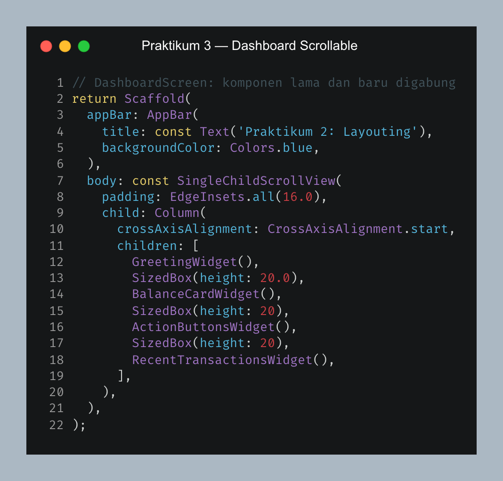
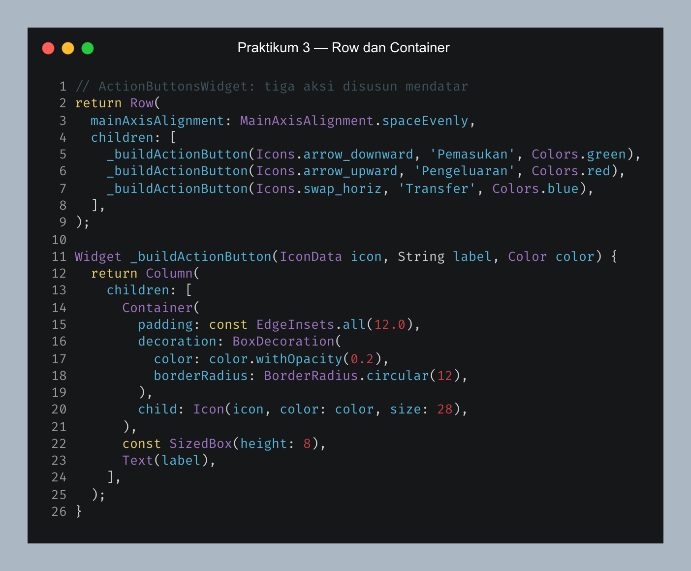
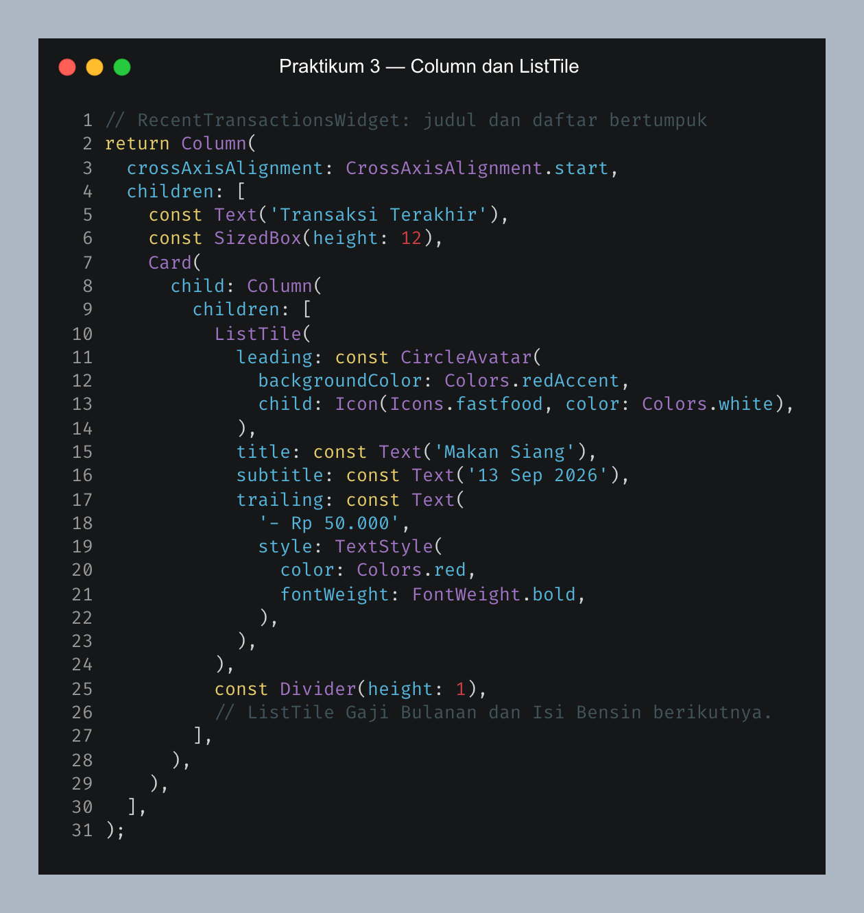
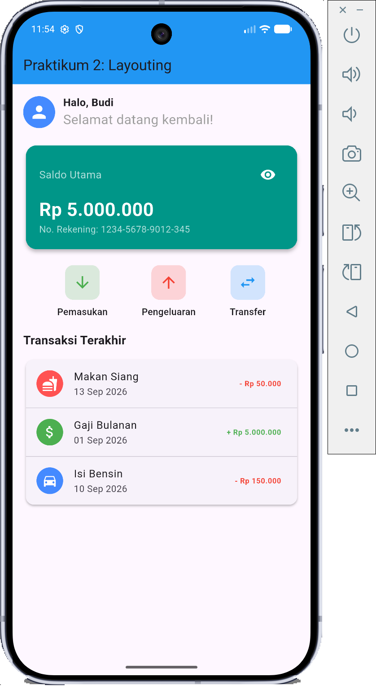
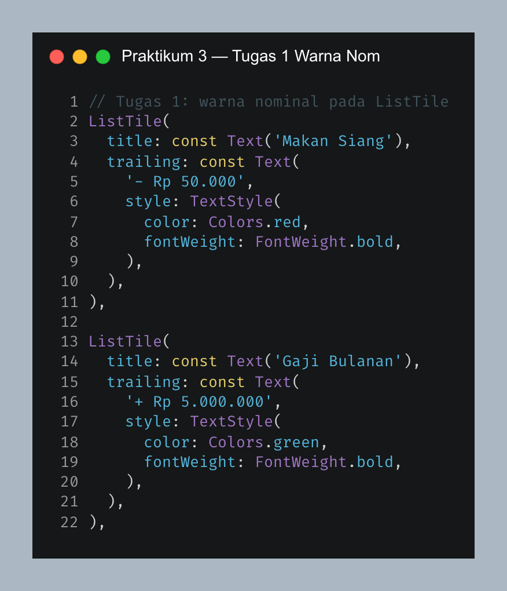
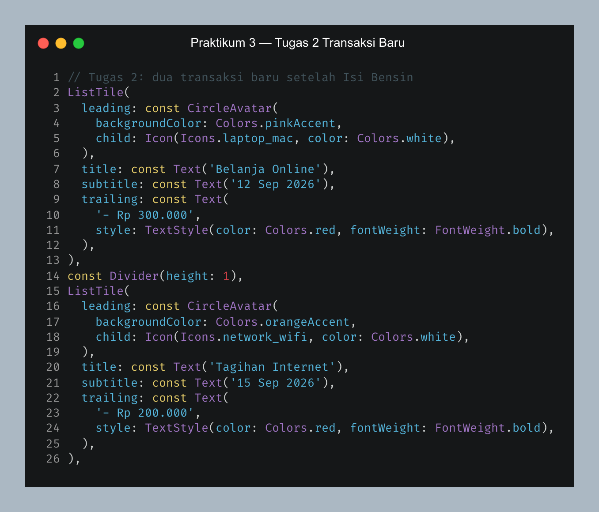
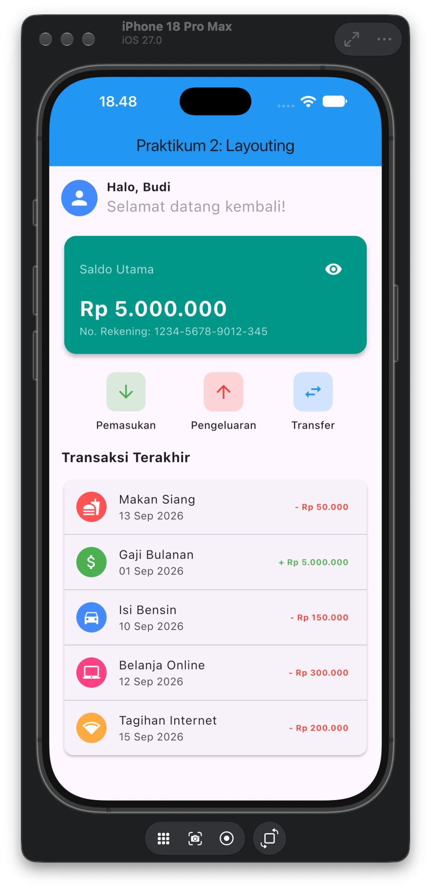

1.1 Tujuan
- Menyusun tiga tombol aksi menggunakan
Row. - Menampilkan daftar transaksi dengan
ColumndanListTile. - Mengatur padding dan warna
Container, serta menjaga dashboard tetap dapat di-scroll.
1.2 Alat
- Flutter SDK dan Dart SDK.
- Visual Studio Code.
- Android Emulator dan iPhone Simulator untuk mengamati hasil.
1.3 Dasar Teori
Row, Column, dan Container
Row menempatkan tombol aksi mendatar, Column menumpuk bagian dashboard, sedangkan Container memberi padding serta latar pada ikon.
ListTile dan SingleChildScrollView
ListTile mengatur ikon, judul, tanggal, dan nominal transaksi dalam satu baris. SingleChildScrollView memungkinkan dashboard tetap dibaca ketika daftar bertambah panjang.
1.4 Langkah-Langkah dan Implementasi
A. Mengembangkan dashboard sebelumnya
Kode GreetingWidget dan BalanceCardWidget dipakai lagi. Dua widget baru, ActionButtonsWidget dan RecentTransactionsWidget, ditempatkan di bawah kartu saldo. SingleChildScrollView membungkus semuanya agar daftar yang panjang tidak meluap keluar layar.

Gambar 1. Kode dashboard yang dapat di-scroll
B. Menyusun tiga tombol aksi
Row menempatkan tombol Pemasukan, Pengeluaran, dan Transfer mendatar. MainAxisAlignment.spaceEvenly membagi jarak antar tombol. Setiap ikon dibungkus Container supaya mempunyai padding, warna latar, dan sudut membulat.

Gambar 2. Kode tiga tombol aksi
C. Menyusun daftar transaksi
Judul “Transaksi Terakhir” dan daftar transaksi ditumpuk dalam Column. Pada setiap ListTile, leading berisi ikon, title nama transaksi, subtitle tanggal, dan trailing nominal. Implementasi awal berisi Makan Siang, Gaji Bulanan, dan Isi Bensin.

Gambar 3. Kode struktur daftar transaksi
D. Menguji dashboard awal
Screenshot awal memperlihatkan ketiga tombol aksi dan tiga transaksi. Warna nominal merah/hijau juga sudah tampak di kode awal yang dipakai; bagian tugas di bawah menjelaskan pengaturan warnanya.

Gambar 4. Dashboard awal dengan tiga transaksi
1.5 Latihan / Tugas
Tugas 1 — Memberi warna pada nominal
Nominal transaksi pengeluaran diberi Colors.red, sedangkan pemasukan diberi Colors.green. Pengaturan dilakukan pada TextStyle widget Text di bagian trailing setiap ListTile. Pada screenshot awal (Gambar 4), Makan Siang dan Isi Bensin tampak merah, sementara Gaji Bulanan hijau.

Gambar 5. Kode tugas 1: warna pengeluaran dan pemasukan
Tugas 2 — Menambahkan dua transaksi
Dua ListTile baru ditambahkan setelah Isi Bensin, yaitu Belanja Online dan Tagihan Internet. Keduanya bertanda minus karena merupakan pengeluaran; nominalnya diberi warna merah. Divider memisahkan baris-baris transaksi.

Gambar 6. Kode tugas 2: Belanja Online dan Tagihan Internet

Gambar 7. Hasil akhir dengan lima transaksi pada iPhone Simulator
1.6 Analisis Hasil Pengujian
| Pengujian | Sebelum tugas | Sesudah tugas |
|---|---|---|
| Jumlah transaksi | 3 transaksi | 5 transaksi |
| Nominal pengeluaran | Transaksi awal | Ditampilkan merah, termasuk dua transaksi tambahan. |
| Nominal pemasukan | Gaji Bulanan | Ditampilkan hijau. |
| Daftar panjang | Dashboard awal | Dapat di-scroll melalui SingleChildScrollView. |
1.7 Kesimpulan
Dashboard menggabungkan widget dari praktikum sebelumnya dengan susunan aksi dan daftar transaksi. Hasil tugas menunjukkan perbedaan warna nominal pemasukan/pengeluaran dan penambahan dua transaksi, sehingga totalnya menjadi lima.